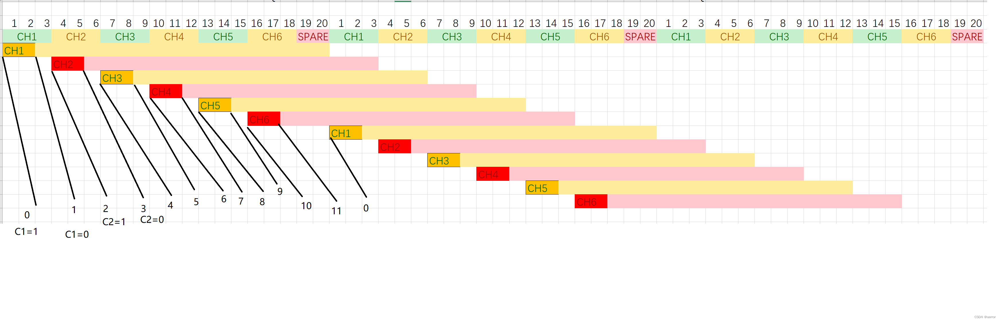

51单片机的timer很少，往往16bit的timer只有一个，可以硬件输出的channel也不多。如我手上这就是这个情况，timer1, 16bit, 只有三个通道。我想输出6个pwm，这个就无法硬件的方式了。只能使用软件模拟了。
方法1.
pwm是1-20ms一个周期，要是设置一个固定的周期，中断间隔就必须比较小，如0.01ms , 这个精度已经不怎么样了，但是每秒还是需要100000次中断，对于51来说，这个压力很大，实测效果很差。
方法2 我们使用分时办法来进行。
1. pwm需要每20ms对pin脚操作两次，周期开始设置它为1，到达指定时间时设置它为0，这个宽度，在航模的信号里，是1-2ms之间。我们将6个通道，每个分时3ms给它做这第一项的两次设置。
2. 每20ms一周期，在一个周期里有12个状态. 分别是 CH_N_ON和CH_N_OFF. n 取值1-6

分时如上图，这样的话，我们只需要中断600次一秒就可以输出6个通道的PWM了
代码：
void et2()interrupt 12{ //TIMER 2
#if DEBUG
#else
u16 tmp;
TR2_CLR
//
//0: 0- 3- 20
//1 C1-3
//2: 3- 6- 20 -23
//3 C2 -6
//4: 6- 9 - 20 -26
//5 C3-9
//6: 9- 12 - 20 -29
//7 C4-12
//8: 12 - 15 20 -32
//9 C5-15
//10: 15- 18 20 -35
//11 C6-18
//T2H = T2L=0;
switch(g_pwm_out_state)
{
case 0:
CH1 = 1;
tmp = g_pwm[0];
break;
case 1:
CH1 = 0;
tmp = 3000-g_pwm[0];
break;
case 2:
CH2 = 1;
tmp = g_pwm[1];
break;
case 3:
CH2 = 0;
tmp = 3000-g_pwm[1];
break;
case 4:
CH3 = 1;
tmp = g_pwm[2];
break;
case 5:
CH3 = 0;
tmp = 3000-g_pwm[2];
break;
case 6:
CH4 = 1;
tmp = g_pwm[3];
break;
case 7:
CH4= 0;
tmp = 3000-g_pwm[3];
break;
case 8:
CH5 = 1;
tmp = g_pwm[4];
break;
case 9:
CH5= 0;
tmp = 7928-g_pwm[4];
break;
}
tmp = 0xffff - tmp*2;
T2H = tmp>>8;
T2L = tmp&0xff;
if(g_pwm_out_state==11)
g_pwm_out_state = 0;
else
g_pwm_out_state++;
TR2_SET;
#endif
}
方法3. 上面的中断次数还是过多，可以进一步减少中断，可以先排序，然后执行，中断最多是pwm数量的N+1, 以下是伪代码
#include <stdio.h>
#include <stdint.h>
uint16_t pwm_ticks[7];
uint8_t pwm_index[7];
uint16_t nextTicks[8];
uint8_t is_need_update=0;
uint8_t state;
uint16_t pwm_to_ticks(uint16_t src)
{
return src;
}
void update_pwm(uint16_t * src)
{
uint8_t ischanged = 0;
uint16_t ticks;
uint8_t idx1 ;
uint8_t idx2;
for(int i = 0;i < 7; i++)
{
ticks = pwm_to_ticks(src[i]);
if(pwm_ticks[i]!=ticks)
{
pwm_ticks[i] = ticks;
ischanged = 1;
}
}
if(ischanged)
{
for(int i=0;i<7;i++)
{
pwm_index[i] = i;
}
for(int i=0;i<6;i++)
{
for(int j=0;j<6-i;j++)
{
idx1 = pwm_index[j];
idx2 = pwm_index[j+1];
if(pwm_ticks[idx1] > pwm_ticks[idx2])
{
pwm_index[j] = idx2;
pwm_index[j+1] = idx1;
}
}
}
idx1 = pwm_index[0];
nextTicks[0] = pwm_ticks[ idx1 ];
for(int i=1;i<7;i++)
{
idx1 = pwm_index[i];
idx2 = pwm_index[i-1];
ticks = pwm_ticks[ idx1 ] - pwm_ticks[ idx2 ];
nextTicks[i]= ticks;
}
nextTicks[7]= pwm_to_ticks(20000) -pwm_ticks[pwm_index[6]] ;
state = 0;
}
}
void timer_int()
{
for(int i=0;i<8;i++)
{
if(state == 7)
{
printf("-----set all pins----------\n");
state = 0;
}
else
{
printf("reset pin %d\n", pwm_index[state]);
state ++ ;
}
uint16_t tt = nextTicks[state];
if(tt > 10)
{
printf("set tick %u\n", tt);
break;
}
else
{
printf("too small %u , continue \n", tt);
continue;
}
}
}
int main(int argc, char const *argv[])
{
uint16_t pwms[][7] =
{
{1500,1000,1600,1799,2300,1500,1500},
{1500,1000,1600,1400,2300,1500,1000},
{1000,1000,1600,1300,2300,1500,2000},
{1000,1250,1600,1799,2300,1500,1000},
};
for(int k =0;k< 4;k++)
{
printf("########### test round #########\n");
update_pwm(pwms[k]);
state = 7;
for(int i= 0;i < 20 ;i ++)
{
printf("********interrupt %u***********\n", i);
timer_int();
}
}
return 0;
}